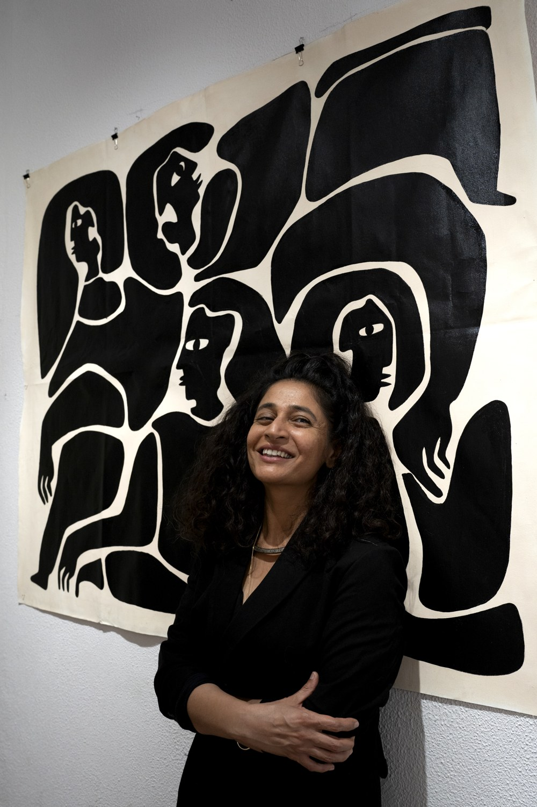

I am a final-year PhD candidate in a dual degree between the Human-Computer Interaction Institute at Carnegie Mellon University and Instituto Superior Técnico, University of Lisbon. I am advised by Jodi Forlizzi and Valentina Nisi.
My dissertation, Operationalizing Self-Perceptions of Aging in HCI Research and Design, studies how older adults in urban India see their own aging, and designs probes, cards and a reflection tool from what they say. From 2025 to 2026 I was a visiting scholar at the Human-AI Interaction Lab, IIT Gandhinagar, hosted by Yogesh Kumar Meena.
I trained in new media design at the National Institute of Design, India, and in media architecture at Bauhaus-Universität Weimar and the University at Buffalo. I co-founded Algo Design Studio in Ahmedabad and ran it for four years. I also draw, paint and make interactive installations.